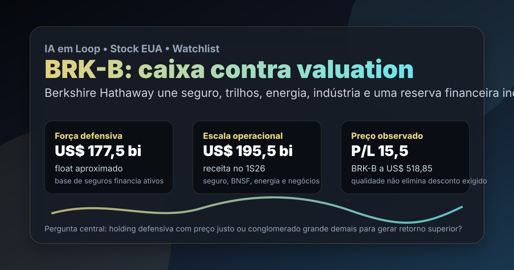

19/08: BRK-B, Berkshire e o preço do caixa defensivo
BRK-B aparece na watchlist permanente dos Estados Unidos como uma holding incomum: seguradora, ferrovia, energia, indústria, varejo e carteira de investimentos no mesmo balanço. A pergunta central é objetiva: Berkshire ainda é uma âncora defensiva interessante ou o tamanho do conglomerado limita o retorno futuro?

Berkshire não é uma aposta simples em tecnologia, banco ou seguro: é uma estrutura de capital que mistura negócios operacionais, float de seguros e disciplina de alocação.
Resposta curta: defensiva, mas não imune ao preço
Nos fundamentos locais de stocks com data-base de 06/08/2026, BRK-B aparece com preço de referência de US$ 518,85, valor de mercado aproximado de US$ 1,119 trilhão, P/L de 15,46, P/L projetado de 24,05, ROE de 10,5% e sem dividend yield informado. Na watchlist permanente EUA, Berkshire aparece na 8ª posição, dentro do setor financeiro e da indústria de seguros diversificados.
A empresa não aparece entre os 20 primeiros do ranking BESST & Buffett EUA nem no top 20 da Magic Formula EUA deste ciclo. Mesmo assim, é um nome relevante para estudo porque funciona como uma régua de qualidade defensiva: quando o preço está razoável, entrega diversificação e disciplina; quando fica caro, pode virar apenas um grande conglomerado negociado com expectativa alta demais.
O que os dados verificados mostram
A consulta pública à SEC no CIK 0001067983 mostra que a Berkshire Hathaway arquivou 10-Q em 10/08/2026, referente ao trimestre encerrado em 30/06/2026. No primeiro semestre de 2026, a companhia registrou US$ 195,483 bilhões de receita, contra US$ 182,240 bilhões no mesmo período de 2025.
O lucro líquido do primeiro semestre foi de US$ 35,773 bilhões, ante US$ 16,973 bilhões no primeiro semestre de 2025. Esse número precisa ser lido com cuidado porque a Berkshire carrega variações contábeis da carteira de investimentos no resultado. Por isso, a análise não pode parar no lucro líquido: caixa operacional, float, qualidade dos negócios controlados e preço pago continuam sendo mais importantes.
No balanço de 30/06/2026, a SEC mostra US$ 1,263 trilhão em ativos e US$ 747,910 bilhões de patrimônio líquido. O caixa operacional do primeiro semestre foi de US$ 21,653 bilhões. No relatório, a companhia também informa float aproximado de US$ 177,5 bilhões, aumento de cerca de US$ 1,1 bilhão contra 31/12/2025.
| Métrica verificada | Fonte/período | Valor | Leitura |
|---|---|---|---|
| Receita | SEC 1S26 | US$ 195,483 bi | escala ampla em seguros, ferrovia, energia e negócios controlados |
| Lucro líquido | SEC 1S26 | US$ 35,773 bi | forte, mas influenciado por marcação de investimentos |
| Caixa operacional | SEC 1S26 | US$ 21,653 bi | capacidade de gerar recursos nos negócios |
| Patrimônio líquido | SEC 30/06/2026 | US$ 747,910 bi | base patrimonial rara no mercado americano |
| Float de seguros | 10-Q 2T26 | US$ 177,5 bi | financiamento estrutural de longo prazo quando o seguro é bem precificado |
Por que Berkshire importa para a watchlist
Berkshire é útil porque separa duas perguntas que o investidor costuma misturar. A primeira é sobre qualidade: a companhia tem balanço robusto, negócios resilientes e cultura de alocação de capital. A segunda é sobre retorno futuro: uma empresa que já vale mais de um trilhão de dólares precisa de oportunidades muito grandes para crescer acima da média por muitos anos.
O preço observado de US$ 518,85 e o P/L de 15,46 não parecem extremos para uma holding tão sólida, mas também não transformam a tese em barganha automática. O investidor está comprando uma combinação de resiliência, caixa, seguros, BNSF, energia, negócios industriais e carteira acionária. Essa combinação reduz fragilidade, mas pode diluir velocidade de crescimento.
BRK-B parece mais adequada como candidata de acompanhamento defensivo do que como busca agressiva por crescimento. A tese melhora quando o mercado exige menos pelo balanço e pelo float; piora quando o prêmio embute retorno superior que um conglomerado desse tamanho pode ter dificuldade de entregar.
O que favorece e o que ameaça a tese
Favoráveis
• Balanço muito forte e patrimônio líquido elevado.
• Float de seguros grande, com histórico de disciplina técnica.
• Diversificação entre seguros, ferrovia, energia, indústria, serviços e investimentos.
• Gestão historicamente prudente em liquidez e alocação de capital.
• P/L local moderado frente à qualidade defensiva do conjunto.
Desfavoráveis
• Tamanho reduz a chance de retornos extraordinários por muitos anos.
• Lucro líquido pode oscilar por marcação da carteira de investimentos.
• Seguros dependem de precificação, sinistralidade e eventos catastróficos.
• BNSF e energia carregam sensibilidade a ciclo, regulação e capex.
• Sucessão e disciplina futura de alocação precisam continuar provando consistência.
Checklist para acompanhar daqui em diante
| Ponto | O que monitorar | Se piorar |
|---|---|---|
| Float | crescimento, custo e resultado de underwriting | o financiamento estrutural perde qualidade |
| Caixa operacional | geração dos negócios controlados | a holding depende mais de marcação de investimentos |
| BNSF e energia | volume, margem, capex e regulação | ativos reais deixam de compensar o peso do conglomerado |
| Valuation | P/L, preço sobre valor contábil econômico e retorno esperado | o preço passa a cobrar estabilidade demais |
| Alocação | recompras, aquisições e uso de caixa | o excesso de liquidez rende pouco e reduz retorno futuro |
Conclusão
A resposta para a pergunta do post é: Berkshire continua sendo uma das estruturas defensivas mais fortes da bolsa americana, mas o retorno futuro depende do preço e da qualidade da alocação de capital. O balanço, o float e a diversificação ajudam; o tamanho e a necessidade de oportunidades gigantes limitam o otimismo sem margem de segurança.
Na régua do IA em Loop, BRK-B merece seguir na watchlist como referência de solidez e disciplina. Para virar uma candidata mais atraente de carteira, precisa combinar preço mais convidativo, continuidade do float de baixo custo e sinais de que os negócios controlados seguem gerando caixa suficiente para compensar o peso do conglomerado.